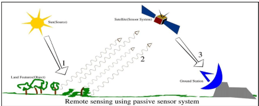
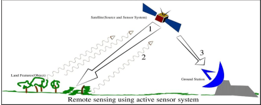
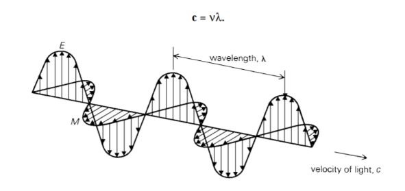
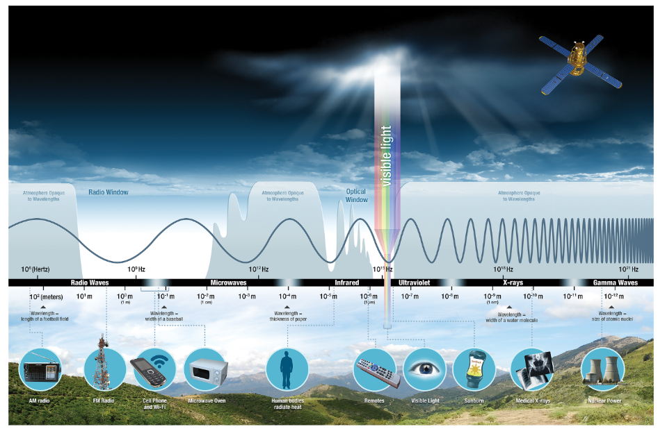

1. Module aims
Operationalise remotely sensed Earth observation data for informing decisions on environmental hazards arising from a changing climate, specifically in relation to urban areas and future urban sustainability.
2. Summary
Definition
Remote sensing: acquiring information from a distance(e.g. Landsat and Sentinel), achieved through sensors(Satellites, Planes, Drones, Phones and free standing on the ground or sea).
Waves of an electromagnetic field, travel through space and carry radiant energy = Electromagnetic radiation (EMR). Waves are part of the EMR spectrum.
Energy carried by EMR waves = radiant energy
Energy per unit of time = radiant flux
Energy from the sun = incoming short wave radiation or shortwave radiation
Energy (solar power) from the sun per unit area per unit time (from electromagnetic radiation) = solar irradiance (per unit time - flux)
Energy leaving a surface per unit area per unit time = Exitance (emittance) (per unit time - flux)
Flux means time.
Rayleigh = particles are very small compared to the wavelength
Mie = particles are the same size compared to the wavelength
Non selective = particles are much larger than the wavelength
Data formats 
\[ \left\{ \begin{array}{l} \text{geosynchronous orbit (GSO) = satellite matches the Earth's rotation } \\ \text{geostationary orbit = holds same position, usually only for communications but some sensors are geostationary.} \end{array} \right. \]
Two types of sensors
| passive | active |
|---|---|
| use available energy | energy source for illumination |
| emit nothing | emit electromagnetic |
| detecting reflected energy from the sun | - |
| energy in electromagnetic waves | - |
| human eye, camera, satellite sensor | Radar, X-ray, LiDAR |
|  |  |
Electromagnetic waves
\[ \lambda = \frac{c }{v} \]  This kind of energy waves reflected by the surface.
Scattering in action
Sunlight is scattered by particles in the atmosphere and smaller wavelengths scatter easier. Wavelength of visible light(from long to short): red, orange, yellow, green and blue.
Thus both sky and ocean seems blue in eyes for blue light has shorter wavelength and is easy to be scattered and reflected. But there’s no atmosphere on the moon so no scattering can happen, thus the moon have a black sky.
So clouds is a big problem in remotely sensing for it will affect the wavelength received by satellite. Use Synthetic Aperture Radar(SAR) to “see through clouds”.
Interacting with Earth’s surface
Bidirectional Reflectance Distribution Function(BRDF): Change view and illumination angles.
SAR data
Resolution
remotely sensed data varied based on four resolution:
\[ \left\{ \begin{array}{l} \text{Spatial} \\ \text{Spectral} \\ \text{Temporal} \\ \text{Radiometric} \end{array} \right. \]
Spectral resolution
Take values for each wavelength across the electromagnetic spectrum to create a spectral signature thus every feature on Earth will have a unique spectral signature.
Constrain: atmospheric window - Water vapour, ozone, carbon dioxide and atmospheric molecules block parts of the the spectrum, we can only observe where there aren’t absorbed by the atmosphere.

summarise, application reflection 内容摘要，数据/概念/方法（或相关概念）已应用于文献/政策或其他研究，对所呈现内容的个人反思